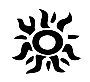
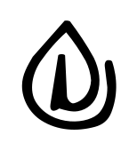
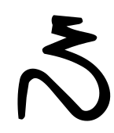
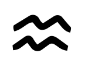
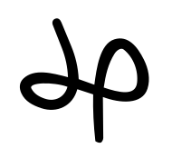
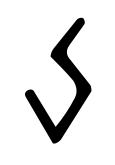

Fragmento 00 / O limiar
O que resta
quando a
certeza cai?
A verdade não é recebida.
É desvelada.
O desenho não termina no desenho.
Não confunda o véu
com aquilo que ele esconde.
A última certeza que você defendeu
também foi a última que você examinou?
A instituição
Uma Ordem.
Não um
dogma.
A Suprema Ordem de Aleteia é uma instituição mágico-filosófica caoísta voltada à investigação da realidade. Não guarda uma resposta definitiva. Mantém aberto o trabalho de procurar.
Aleteia é assumida como desvelamento: retirar camadas entre o que acontece, o que percebemos e a história que contamos sobre ambos. A verdade não se torna propriedade de quem fala mais alto.
Magia do Caos, filosofia e linguagem simbólica se encontram aqui como instrumentos de percepção, criação e revisão. A crença pode abrir uma passagem. Também pode construir uma cela.
Uma pergunta honesta vale mais
que uma certeza protegida.
A Ordem não pede que você abandone a razão na entrada.
01 / InvestigarNenhuma ideia é intocável.
02 / ObservarIntensidade não é prova.
03 / RevisarContradição não é heresia.
O campo anterior à forma
Antes da forma,
possibilidade.
Na cosmogonia da Ordem, o Caos não é o inimigo da criação. É o campo indeterminado do qual uma forma pode emergir. O que ainda não recebeu um limite não é necessariamente vazio.
Uma diferença abre o primeiro recorte. O recorte ganha relação, duração e estrutura. A Ordem é uma configuração possível do Caos — não a sua derrota.
Quando a forma se torna prisão, ela precisa voltar a poder mudar.
- 01 / Caos
O possível.
Antes do nome, um campo aberto.
- 02 / Distinção
O recorte.
Algo se torna perceptível entre outras possibilidades.
- 03 / Relação
A forma.
O que se diferencia encontra duração e consequência.
Esta é uma linguagem de leitura da Ordem.
Não confunda o mapa com o mundo.
A gramática do símbolo
Sete pontas.
Oito princípios.
O septagrama reúne sete funções da manifestação. Tempo ocupa o centro: é o que permite que uma função se torne percurso. Nenhuma ponta contém o todo.
Mapa de leitura
Sol / Luz
A primeira diferença entre ver e repetir: tornar algo discernível.
Toque em um símbolo para abrir sua leitura.
As oito entradas também estão abaixo.
Retirar o véu
O símbolo não pede obediência.
Pede uma relação que você consiga examinar.
As runas pertencem à linguagem própria da SOA. Cada uma possui função, excesso e contrapeso. Não são uma tabela universal de correspondências.

01 / RevelaçãoSol / LuzVer não é possuir.
Clareza, foco e orientação. A luz torna diferenças legíveis e permite reconhecer o que antes permanecia oculto.
O excesso: certeza absoluta.
O contrapeso: humildade para reconhecer a própria sombra.
O que a sua clareza ainda não ilumina?

02 / ContinuidadeVidaO que vive não permanece igual.
Auto-organização, crescimento e regeneração. Vida é a capacidade de continuar sem exigir que toda forma anterior sobreviva.
O excesso: crescer sem limite.
O contrapeso: aceitar a poda e a impermanência.
O que precisa terminar para que algo continue?

03 / TransformaçãoFogoNem toda chama é revelação.
Ruptura, coragem e transformação. O fogo desfaz formas que já não precisam determinar o próximo passo.
O excesso: confundir intensidade com verdade.
O contrapeso: discernir o que deve ser transformado e o que precisa ser preservado.
Você quer mudar o mundo ou apenas vê-lo queimar?
04 / EstruturaTerraO limite também sustenta.
Corpo, estrutura, permanência e materialização. Terra dá recipiente ao possível: aquilo que foi percebido precisa encontrar chão.
O excesso: rigidez.
O contrapeso: a adaptação da Água.
O que sustenta você também permite movimento?

05 / RelaçãoÁguaAdaptar não é desaparecer.
Vínculo, memória afetiva e adaptação. Água permite que diferenças encontrem relação sem precisarem se tornar idênticas.
O excesso: dissolver todos os limites.
O contrapeso: a forma e o recipiente da Terra.
Em quais relações você deixou de reconhecer os próprios contornos?

06 / PerspectivaArO nome não contém a coisa.
Pensamento, linguagem e transmissão. Ar torna uma experiência compartilhável e permite que outra perspectiva entre no mesmo campo.
O excesso: abstração sem consequência.
O contrapeso: Terra e Vida, onde a ideia encontra corpo.
Sua explicação aproxima o real ou apenas fecha a conversa?

07 / PotênciaEnergiaPotência exige direção.
Ativação, corrente e capacidade de produzir mudança. Energia faz uma intenção sair da possibilidade e encontrar execução.
O excesso: aceleração sem direção.
O contrapeso: Tempo, pausa e escolha de ocasião.
Você está avançando ou apenas acelerando?
Centro / IntegraçãoTempoSem duração, nada atravessa.
Sequência, memória, ocasião e irreversibilidade. Tempo não é uma oitava ponta: é o centro que permite aos outros princípios existir como processo.
O excesso: fatalismo.
O contrapeso: decisão e responsabilidade pelo próximo gesto.
O que você chama de destino ainda comporta uma escolha?
Magia do Caos
A crença
é uma chave.
Não uma cela.
Entrar em uma visão de mundo.
Experimentar a sua linguagem.
Conseguir sair dela.
O símbolo pode produzir sentido.
O sentido, sozinho, não encerra a investigação.
01 / ParadigmaUma lente, não o olho.
Um paradigma organiza o que você consegue perceber. A prática caoísta experimenta diferentes lentes sem transformar nenhuma delas em autoridade permanente.
02 / GnosePresença antes da explicação.
Gnose designa estados de atenção e experiência empregados na prática mágica. O vivido pode deslocar uma interpretação; não torna toda interpretação automaticamente verdadeira.
03 / SigiloA intenção ganha forma.
O sigilo condensa uma intenção em linguagem simbólica. Mais que ornamento, é uma interface entre atenção, imaginação e ação. Sua leitura permanece situada no contexto da prática.
04 / EgrégoraO símbolo encontra memória.
Na linguagem da Ordem, a egrégora é a identidade coletiva sustentada por atenção, símbolos, vínculos e práticas recorrentes. Não deve substituir a autonomia das pessoas que participam dela.
05 / RegistroAté a memória usa máscaras.
Observar, registrar e revisar preserva aquilo que aconteceu antes que a lembrança o reescreva para proteger uma crença. Uma falha também pertence ao arquivo.
Crenças podem ser ferramentas.
Pessoas, não.
Interrogatório sem juiz
Não responda
depressa.
Não há pontuação, aprovação ou iniciação automática.
Estas perguntas não pedem sua resposta à Ordem. Pedem que você escute a própria resposta.
- 01 / 07
Você sabe que é verdade
ou precisa que seja?O que faria você reconhecer que está enganado?
- 02 / 07
Se tivesse nascido em outro lugar,
defenderia a mesma certeza?Quais crenças você escolheu — e quais apenas aprendeu a repetir?
- 03 / 07
A verdade existe fora
de quem a percebe?Uma experiência e a sua interpretação são realmente a mesma coisa?
- 04 / 07
Você já questionou o mundo inteiro?
E a própria dúvida?Seu ceticismo permite descobrir algo ou apenas impede que algo o alcance?
- 05 / 07
O que você chama de real
precisa da sua explicação?Uma coisa deixa de acontecer quando você não consegue nomeá-la?
- 06 / 07
Está procurando a verdade
ou uma versão que proteja você?Qual certeza custa mais abandonar: a que explica o mundo ou a que justifica sua história?
- 07 / 07
Sem seus títulos,
suas máscaras e certezas,
o que ainda chama de “eu”?Você é a narrativa — ou também pode ser quem a revisa?
A Ordem não responde por você.
O silêncio também pertence ao percurso.
A quebra do ego
Você não precisa
defender tudo
o que já foi.
O ego organiza uma história: quem sou, o que defendo, o que não posso admitir. Essa história ajuda a atravessar o mundo. Torna-se prisão quando é confundida com uma identidade impossível de revisar.
Quebrar o ego, aqui, não é apagar a pessoa. É desfazer a fusão entre você e suas máscaras, crenças e papéis. Reconhecer: tenho este padrão não é o mesmo que sou este padrão para sempre.
O Grau Zero começa por observar sem defender imediatamente. Abertura não exige submissão: autonomia, limites e discernimento permanecem.
Posso estar enganado.
E continuo capaz de escolher.
O que existe depois da última camada?
Não uma resposta que precisa ser obedecida.
Um espaço onde outra pergunta pode nascer.
O arquivo permanece aberto.
Não entregue a ninguém
o direito de pensar por você.